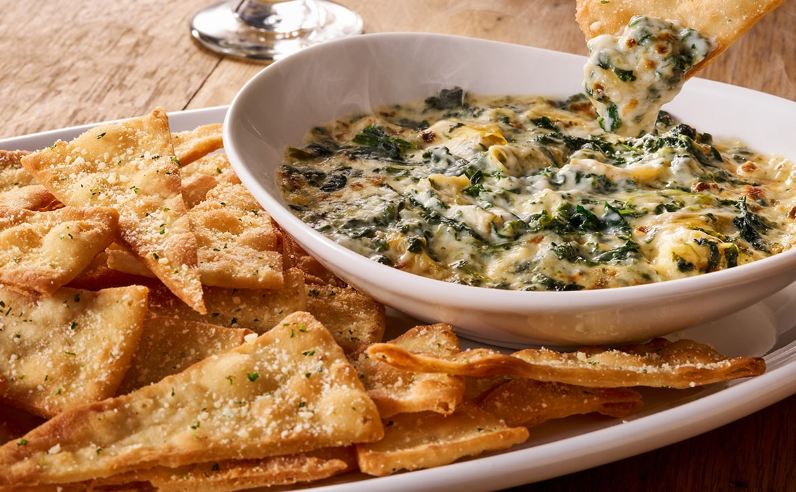
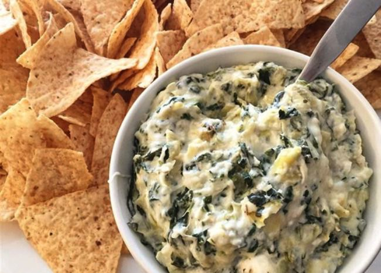

A classic, creamy dip that perfectly highlights its veggie stars alongside cheesy goodness.
New York Times - Spinach Artichoke Dip
 
Yummly
Before bombarding you with large images of food and titles of recipes, Yummly welcomes the user with options of types of recipes. I find this to be a lot less overwhelming and if I went in with no idea what recipe I was looking for, I would have a much easier time, navigating to something I could make and enjoy through Yummly's initial questions for personalization.
The Pioneer Woman
The home page has many loud colors and patterns which initially might turn me off, but are rather on brand for the Pioneer Woman. However the recipes themselves are much more simplified in terms of design. Particularly the jump to recipe button stuck me as many cooking sites are known for long stories to scroll through before you reach the recipe itself.
Smitten Kitchen
I found the recipes tab on the site to be overwhelming as once it is clicked on the user is presented with a bunch of boxes, all the same color and similar size, that lead to categories of recipes. Some sort of hierarchy may make that clearer. Something that I really enjoyed though was how the recipes included step-by-step photos rather than just the finished product, which would really help the act of cooking along with the recipe.
Parks Project
I like how the website has images that span the entire width of the page. They give a nice effect by breaking up the background and adding a sort of dimension as they recede while images with margins on that sides can look like they're sitting on top of the page.
Dossier
One thing I liked about this website was how reviews by publications were presented. The site uses buttons the rotate between these reviews, giving the user the choice to see more if this is information that they are interested in or not engage if it is not.
Firewatch
This website has a clear consistent color theme that makes it very satisfying to use. I'd want to work on how color can be used to convey a hierarchy of information in my designs.